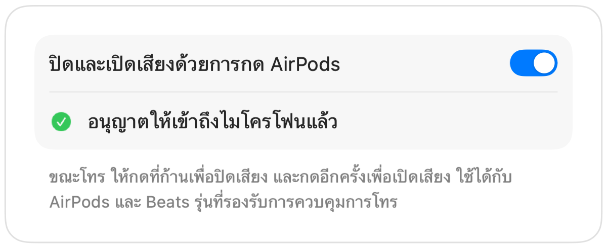

วิธีปิดเสียง Google Meet ด้วย AirPods บน Mac
บน iPhone การกดก้าน AirPods จะปิดเสียงการโทร แต่บน Mac นั้น Google Meet ทำงานใน Chrome และ Chrome ไม่ได้ส่งต่อการกดนั้นไปยังหน้าเว็บ เมื่อคุณกด จึงได้ยินเสียงเตือนข้อผิดพลาด และ Meet ก็ยังคงส่งเสียงของคุณต่อไป
Muffle ช่วยแก้ปัญหานี้ให้กับการโทร Meet ทุกครั้ง โดยจะรับสัญญาณการกด AirPods เองและปิดเสียงไมโครโฟนของ Mac ทำให้คนใน Meet ไม่ได้ยินเสียงแม้แท็บจะอยู่เบื้องหลัง
ปิดเสียง Google Meet ด้วย AirPods ของคุณ
- 1
ติดตั้ง Muffle และอนุญาตให้เข้าถึงไมโครโฟนเมื่อมีข้อความแจ้ง
- 2
เข้าร่วมการโทร Google Meet ใน Chrome, Safari, Arc หรือ Edge
- 3
กดที่ก้าน AirPods หนึ่งครั้งเพื่อปิดเสียง ไอคอน Muffle จะเปลี่ยนเป็นสีแดง
- 4
กดอีกครั้งเพื่อเปิดเสียง คุณยังสามารถกด Control-Option-M จากแอปใดก็ได้

- Meet อาจยังคงแสดงว่าไมโครโฟนเปิดอยู่ เนื่องจาก Muffle ปิดเสียงที่ตัวไมโครโฟนโดยตรงแทนปุ่มของ Meet ทุกคนจะไม่ได้ยินเสียงเมื่อไอคอน Muffle เป็นสีแดง
- เปิดใช้ “เริ่มทุกการโทรแบบปิดเสียง” เพื่อเข้าร่วมการโทร Meet แบบปิดเสียงทุกครั้ง
คำถามที่พบบ่อย
ทำไมการกด AirPods ถึงไม่ปิดเสียง Google Meet
Chrome ไม่รองรับท่าทางปิดเสียงด้วย AirPods ของ macOS สำหรับการโทรบนเว็บ macOS จึงไม่มีแอปที่จะส่งต่อการกดไปให้ ซึ่ง Muffle จะเข้ามาทำหน้าที่เป็นแอปนั้น
ปุ่มลัดของ Meet เองยังไม่พอหรือ
ปุ่มลัด Command-D ของ Meet ใช้งานได้เฉพาะตอนที่แท็บ Meet อยู่ด้านหน้าสุดเท่านั้น แต่ปุ่มลัดและการกด AirPods ของ Muffle ใช้งานได้จากทุกแอป